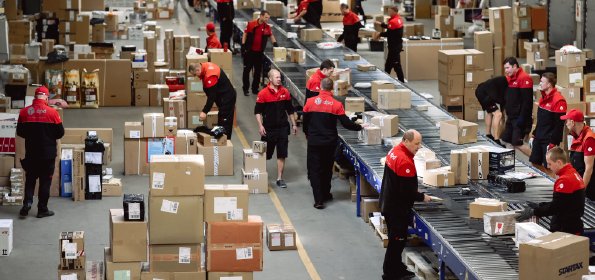

Informācija saņēmējiem

|
Paku saņemšana
Ja, ievadot pakas numuru izsekošanas sistēmā, Jūs redzat, ka pakas statuss ir "Nodots piegādei", tas nozīmē, ka Jūsu paka jau atrodas pie kurjera.
Ja paka nav atrodama sistēmā, tad tā vēl nav nodota uz piegādi.
Ja pakas numurs nav zināms, Jūs to varat noskaidrot, sazinoties ar nosūtītāju.
Sūtījuma piegādes laiks ir atkarīgs no servisa veida, ko izvēlējies sūtījuma nosūtītājs.
Gadījumā, ja, pasūtot/pērkot preci, Jums bija iespēja izvēlēties laika intervālu, sūtījums tiks piegādāts noteiktā laika intervālā. Ja Jums nebija iespējas izvēlēties piegādes laiku, paka tiks piegādāta darba dienas laikā.
Mēs varam nodrošināt piegādi noteiktā laika intervālā tikai gadījumā, ja nosūtītājs sākotnēji ir izvēlējies šo pakalpojumu.
DPD Latvija kurjerpasta darbu Latvijā regulē Latvijas Pasta likums, kas nosaka to, ka pasta sūtījumu piegādi adresātam drīkst veikt tikai, izsniedzot to saņēmējam personīgi pret parakstu (Pasta likuma 21.panta (1)2 punkts).
Sūtījums nepieder DPD Latvija, mēs drīkstam izsniegt to tikai tai personai, ko nosūtītājs ir norādījis uz pakas. Ja pats nosūtītājs mūs informēs, ka paku drīkst izsniegt citam saņēmējam, tad mēs būsim tiesīgi mainīt saņēmēja datus un piegādāt sūtījumu citam adresātam. Ja nepieciešams mainīt saņēmēju, lūdzu, sazinieties ar nosūtītāju.
Lai izvairītos no krāpniecības mēģinājumiem un sūtījuma nosūtītājs būtu pārliecināts, ka sūtījumu saņems tā persona, kurai tas tiek sūtīts, kurjeram ir jālūdz sūtījuma saņēmējam uzrādīt personu apliecinošais dokuments un jānoraksta (jāievada skenerī) dokumenta pēdējie 5 cipari.
Veicot šādu pārbaudes procedūru, tiek aizsargātas Jūsu kā saņēmēja tiesības pret iespējamo sūtījuma zaudējumu - tas ir pierādījums, ka kurjers pirms sūtījuma izsniegšanas ir pārbaudījis personu apliecinošā dokumenta oriģinālu un ir bijusi veikta personas datu pārbaude.
Ja uztraucaties par konfidencialitāti, informējam, ka:
- LR Datu valsts inspekcijas izsniegtā personas datu apstrādes reģistrācijas apliecība uzņēmumam DPD Latvija dod tiesības veikt personas dokumentu pārbaudi un nepilnu identifikācijas kodu atzīmēšanu datu bāzē.
-
Saskaņā ar Fizisko personu datu aizsardzības likuma 10.pantu, DPD Latvija nodrošina:
1) godprātīgu un likumīgu personas datu apstrādi;
2) personas datu apstrādi tikai atbilstoši paredzētajam mērķim un tam nepieciešamajā apjomā. - Vēlamies apliecināt, ka jebkuri iegūtie personas dati ir stingri konfidenciāla informācija, kas tiek izmantota tikai un vienīgi gadījumos, kad nosūtītājam ir nepieciešams pārliecināties par precīzu sūtījuma izsniegšanu pareizajam adresātam. Nepiederošu personu piekļuve datu bāzei, kā arī datu izmantošana citiem nolūkiem ir pilnīgi izslēgta.
Pamatojoties uz minēto skaidrojumu, ceram uz Jūsu sapratni situācijā, kad Jums kā saņēmējam ir jāuzrāda personu apliecinošs dokuments, no kura tiek atzīmēta minimālā informācija. Šādā veidā tiek maksimāli aizsargātas Jūsu kā patērētāja tiesības.
Situācijas piemērs:
Jānis ir nosūtījis mammai uz Valmieru jaunu televizoru. Kurjers dodas uz norādīto adresi, tur viņu pie mājas sagaida kāda kundze un saka, ka sūtījums ir paredzēts viņai, lai kurjers izsniedz sūtījumu. Kurjers atdod sūtījumu kundzei un dodas prom. Pēc kāda laika zvana Jānis un jautā, kur ir mans sūtītais sūtījums, ko mamma nav saņēmusi? Izrādās, kundze, kas saņēmusi sūtījumu, nemaz nav bijusi Jāņa mamma, bet gan krāpniece. Kā kurjers varēja zināt, ka tā nav Jāņa mamma?
Lai šādas situācijas nebūtu, kurjers sūtījumu izsniedz tikai tad, kad saņēmējs uzrāda personas apliecinošu dokumentu un kurjers noraksta 5 ciparus no dokumenta numura. Tādējādi nosūtītājs var justies droši, ka sūtījums tiks nogādāts paredzētajam saņēmējam, saņēmējs var justies droši, jo zina, ka sūtījumu nevienam citam neizsniegs nevarēs, un kurjers jūtas pārliecināts, ka visu ir izdarījis pareizi un visas puses ir apmierinātas.
Piezīme: personu apliecinošie dokumenti Latvijā ir pase un ID karte, kā arī DPD Latvija akceptē autovadītāja apliecības uzrādīšanu.
DPD ir starpnieks starp preces nosūtītāju un saņēmēju, un ir atbildīgs tikai par sūtījuma piegādi. Paraksts pirms sūtījuma atvēršanas, izpakošanas utt. nozīmē, ka sūtījums saņēmējam piegādāts tāds, kāds tas tika paņemts no nosūtītāja, t.i., slēgts un aizpakots.
Ja kurjeram piegādes brīdī no saņēmēja jāiekasē nosūtītāja norādītā skaidrās naudas summa, kurjers par veikto darījumu izraksta īpašu dokumentu – COD kvīti. Tā apliecina par darījumiem saņemto samaksu skaidrā naudā.
COD kvīšu noformēšanas prasības nosaka, ka COD kvīti izsniedz par nosūtītāja preces apmaksu (pēcmaksas sūtījumu*), t.i., par svešu naudu, kuru DPD pēc tam pārskaita nosūtītājam, piemēram, internetveikalam.
Saskaņā ar VID uzziņu Nr.15.5.3/1221 no 19.01.2009, COD kvīts ir pielīdzināta kases iemaksu attaisnojuma dokumentam, un DPD Latvija ir jānodrošina, lai kvītī tiktu norādīti visi Ministru kabineta 2003.gada 21.oktobra noteikumu Nr.584 „Kases operāciju uzskaites noteikumi” 14.punktā noteiktie rekvizīti, tai skaitā personas kods:
“14.3. fiziskās personas — skaidrās naudas maksātāja — vārds, uzvārds un personas kods (rezidentiem), ... vai personas identifikācijas kods un valsts nosaukums (nerezidentiem)...”
* Pēcmaksas pasta sūtījums – pasta sūtījums, kuru izsniedz saņēmējam, iekasējot no viņa sūtītāja norādīto summu, kuru pasta komersants savukārt nosūta pēc sūtītāja uzrādītās adreses.
Sūtījuma piegādes brīdī saņēmēja PIENĀKUMS ir veikt sūtījuma ārējā iepakojuma novērtēšanu.
Ja kurjera klātbūtnē pamanāt, ka:
1. Bojāts pakas ārējais iepakojums: norādiet kurjeram uz to un informējiet, ka vēlaties veikt sūtījuma satura pārbaudi. Parakstieties par sūtījuma saņemšanu un kopā ar kurjeru veiciet sūtījuma satura novērtēšanu. Ja sūtījuma saturs:
- Nav bojāts, tad ceram uz Jūsu sapratni, jo nelieli sūtījuma ārējā iepakojuma bojājumi atkarībā no sūtījuma iepakojuma kvalitātes var rasties sūtījuma apstrādes laikā. Jūsu paraksts apliecina, ka sūtījuma saturs piegādāts nebojātā veidā.
- Ir bojāts, tad lūdziet kurjeru sastādīt Bojājuma aktu. Šajā gadījumā Jūs varat atteikties no sūtījuma vai to pieņemt, atkarībā no Jūsu izvēles. Ja Jūs atsakaties no sūtījuma, kurjers skanerī veiks attiecīgu atteikuma atzīmi. Ja vēlaties iesniegt pretenziju par sūtījuma satura bojājumiem, lūdzam vērsties pie nosūtītāja, kurš savukārt iesniegs prasību attiecīgajā DPD filiālē, ar kuru ir noslēgts līgums par sūtījuma piegādi.
2. Ārējais iepakojums nav bojāts, bet ir aizdomas par sūtījuma satura bojājumu: norādiet kurjeram uz to un informējiet, ka vēlaties veikt sūtījuma satura pārbaudi. Parakstieties par sūtījuma saņemšanu un kopā ar kurjeru veiciet sūtījuma satura novērtēšanu. Ja sūtījuma saturs:
- nav bojāts, tad papildus darbības nav nepieciešamas;
- ir bojāts, tad lūdziet kurjeru sastādīt Bojājuma aktu. Šajā gadījumā sūtījums paliek pie saņēmēja. Ja vēlaties iesniegt pretenziju par sūtījuma satura bojājumiem, lūdzam vērsties pie nosūtītāja, kurš savukārt iesniegs prasību attiecīgajā DPD filiālē, ar kuru ir noslēgts līgums par sūtījuma piegādi.
Ja pēc kurjera aizbraukšanas pamanāt, ka:
1. Bojāts pakas ārējais iepakojums, un sūtījuma saturs:
- nav bojāts, tad ceram uz Jūsu sapratni, jo nelieli sūtījuma ārējā iepakojuma bojājumi atkarībā no sūtījuma iepakojuma kvalitātes var rasties sūtījuma apstrādes laikā;
- ir bojāts, tad nekavējoties informējiet nosūtītāju par radušos situāciju un pieteikumam pievienojiet pakas gan ārējā, gan iekšējā stāvokļa bildes, t.i., ārējais iepakojums, iekšējais iepakojums, sūtījuma satura bojājumi;
2. Nav bojāts pakas ārējais iepakojums, bet bojāts tikai sūtījuma saturs, tad nekavējoties informējiet nosūtītāju par radušos situāciju un pieteikumam pievieno pakas gan ārējā, gan iekšējā stāvokļa bildes, t.i., ārējais iepakojums, iekšējais iepakojums, sūtījuma satura bojājumi.
IEVĒROJIET! Finansiālos jautājumus attiecībā ar sūtījumu saņēmējam jākārto ar sūtījuma nosūtītāju.
Ja saņēmējs ir DPD klients, kurš pats ir pieteicis konkrētā sūtījuma paņemšanu no citas adreses un pats apmaksā šī sūtījuma piegādi, šādā gadījumā, saņēmējs iesniedz pretenziju DPD, saskaņā ar noteikto kārtību, kas aprakstīta:
Jūs saņemiet SMS vai e-pastu, kurā norādīts, ka nākamajā darba dienā vai šodien 1 stundas laika intervālā, mūsu kurjers piegādās Jums adresētu sūtījumu.
Piemēram:
“Nakamaja darba diena, DPD kurjers Jums piegadas paku 05757000157953. Ja velaties mainit piegades datus dodieties uz https://dpdpaka.dpd.lv/hashlin k-auth?ccp-secure=YkXXxXd3dlVE QTAwNERYUGwvYVN4RDlraUNIbVAxby 9WTXZXWVAvS3JJUT0= “
vai
"DPD no 16:12-17:12 piegadas paku 05806111413000. Ja velaties mainit piegades datus dodieties uz https://dpdpaka.dpd.lv/hashlin k-auth?ccp-secure=WUdEcXTDR3dV V25YYjcxNnRIWlN4dmZRVXlpanptdl NhcmXXcG0rOXpQRT0=”
Ja Jūs apmierina piegādes diena/laiks un nevēlaties neko mainīt, gaidiet ierodamies kurjeru!
Ja tomēr piegādes diena vai laiks Jums nav piemērots, dodoties uz SMS vai e-pastā norādīto saiti un izvēlaties kādu no piedāvātajam iespējām:
- Mainīt piegādes dienu;
- Mainīt piegādes adresi;
- Pārsūtīt uz kādu no Pickup tīkla punktiem;
- Atteikties no sūtījuma.
Jūsu ievērībai:
Piegādes dienā nav iespējams mainīt norādīto piegādes laika intervālu.
Norādītajā 1 stundas laika intervālā piegādi varam nodrošināt tikai norādītajā piegādes adresē.
Mainot piegādes adresi, piegāde pārceļas uz nākamo darba dienu.
Mainot piegādes dienu, arī plānotais piegādes laika intervāls var mainīties, tāpēc izvēlētās piegādes dienas rītā Jūs saņemsiet jauno piegādes laika intervālu.
Ja Jums rodas jautājumi, lūdzu sazinieties ar Klientu apkalpošanas nodaļu Tālr.: 67387284, e-pasts: [email protected].
Izmantojot Predict, mēs informējam sūtījuma saņēmēju ar SMS vai e-pasta starpniecību, kurā tiek norādīts precīzs vienas stundas laika intervāls, kurā tiks piegādāts sūtījums. Informācija tiek nosūtīta piegādes dienas rītā un, ja piegādes laiks neapmierina saņēmēju, viņš var izvēlēties alternatīvu piegādes datumu, nosūtot atbildes SMS vai e-pastu. DPD vienmēr piedāvā trīs alternatīvus piegādes datumus.
Predict ir pieejams Beļģijā, Čehijā, Vācijā, Igaunijā, Francijā, Lielbritānijā, Ungārijā, Īrijā, Latvijā, Lietuvā, Luksemburgā, Austrijā, Polijā, Portugālē, Slovākijā, Slovēnijā, Spānijā un Šveicē.
Meklē atbildi uz aktuālākajiem jautājumiem šeit!
Gaidāt piegādi? Jūsu paku var izsekot, ievadot 14 ciparu pakas numuru mūsu izsekošanas programmā. Sekojot saitei Jūs redzēsiet savas pakas dzīves ciklu, valstis/pilsētas, kurās tā atradās konkrētajā brīdī kad tika skanēta.
Ja paka nav atrodama izsekošanas sistēmā, tā vēl nav nodota uz piegādi DPD. Gadījumā ja pakas numurs nav zināms, iesakam to noskaidrot, sazinoties ar preču nosūtītāju.
Ja nevarat atrast paku vai izsekošanas sistēmā norādītā informācija Jums nav saprotama, lūdzu uzrakstiet mums paziņojumu, norādot nepieciešamo informāciju: vārds, uzvārds, uzņēmuma nosaukums, pakas numurs, adrese (piegādes), nosūtītājs (nosaukums un valsts), klienta kontaktinformācija. Aizpildiet kontaktformu šeit >>
Lūdzam aizpildīt kontaktformu vai zvanīt uz Klientu apkalpošanas nodaļu pa tālruni 67 387 284. Pēc iespējas konkrētāk aprakstiet situāciju, pieminot pakas numuru, datumu, piegādes adresi un citas detaļas, kas palīdzēs mums atrisināt radušos situāciju.
Kurjera pieteikšanai ir vairākas iespējas:
1) Zvanot uz Pasūtījumu pieteikšanas līniju pa tālruni: 67 060 519. (līguma klientiem)
2) Izmantojot iespēju pieteikt kurjeru internetā: eserviss.dpd.lv
Garantijas vēstule pieejama šeit
To var izdarīt, zvanot uz Klientu apkalpošanas nodaļu pa tālruni 67 387 284 vai aizpildot kontaktfomu. Lūdzu norādiet uzņēmuma nosaukumu un dienu, kad bija plānota paņemšana.
Paldies, ka izvēlējāties laicīgi atcelt pasūtījumu!
Jā, pakalpojums Collection Request nodrošina sūtījuma paņemšanu Jūsu izvēlētajā valstī un piegādi Latvijā.
Juridiskām personām - piemaksa par pakalpojumu + 5 EUR pie cenām, norādītām cenu lapā>>
Privātpersonām - piemaksa par pakalpojumu + 5 EUR pie cenām, norādītām cenu lapā>>
Piesakot kurjeru darba dienā līdz pl. 15:00, sūtījums no Baltijas valstīm tiks paņemts tajā pašā darba dienā, bet no citām EU valstīm - nākamajā darba dienā.
DPD veic piegādes tikai uz ES valstīm.
Par piegādēm Latvijas teritorijā, uz/no Zviedrijas, Somijas, Polijas un citām ES valstīm, cena tiek aprēķināta par katru vienību atsevišķi.
Cena par piegādēm no/uz Lietuvu un Igauniju tiek aprēķināta par sūtījuma kopējo svaru vienam saņēmējam.
Gala cena ir atkarīga no vairākiem parametriem - vai esat DPD līguma klients, juridiska vai fiziska persona, kā arī kādu norēķinu veidu Jūs vēlaties izmantot.
Cenu lapas >>
Pasūtījuma pieteikšana internetā un cenas http://epaka.lv/lv
Ja Jums rodas jautājumi, sazinieties ar Pārdošanas nodaļu pa tālruni 67 387 286 vai rakstot uz [email protected]
Cena par pakalpojumu ir atkarīga no vairākiem kritējiriem:
- vai Jūs esat privātpersona vai juridiska persona (ir/nav līgums ar DPD);
- no un uz kuru valsti ir jāveic piegāde;
- cik pakas būs pasūtījumā;
- kāds ir katras pakas svars.
Lūdzu norādiet kontaktformā visu nepieciešamo informāciju, lai mēs varētu piedāvāt Jums atbilstošu cenu.
Aizpildot līguma noslēgšanas formu DPD mājas lapā. Vairāk informācijas šeit >>
Visi sūtījumi tiek nogādāti uz DPD centrālo terminālu Rīgā, kur tie tiek nosvērti. Klientam ir nepieciešams paziņot DPD operatoram tikai sūtījuma aptuveno svaru, lai mēs varētu izvērtēt, kādas ietilpības transportlīdzeklis ir nepieciešams.
DPD kurjers preču pavadzīmes (PPR) neparaksta, jo nav preču saņēmējs. Kurjers kopā ar paku, PPR piegādās jūsu klientam, kas to parakstīs, apzīmogos un otro eksemplāru atdos DPD kurjeram, kas, savukārt, to nogādās pie mums uz biroju, lai mēs to varētu nosūtīt Jums.
Kopš Latvijas iestāšanās ES, mums nav vajadzīgi nekādi kravas pavaddokumenti pat sūtījumiem ārpus Latvijas robežām (ES valstīs).
Paku paņemšana darba dienās notiek Jūsu norādītajā laika intervālā (atzīmēts pasūtījuma veikšanas brīdī). Ja pasūtījums ir pieteikts līdz norādītam laikam konkrētajā pilsētā vai reģionā, pasūtījuma paņemšana notiks tajā pašā darba dienā, ja vēlāk - nākamajā darba dienā.
Paņemšana nenotika laikā? Sazinieties ar mums! Lūdzu norādiet paredzēto paņemšanas adresi un savu kontaktinformāciju: uzņēmuma nosaukums/vārds, uzvārds, klienta ID (līguma klientiem).
Jūsu paka tiek nodota uz piegādi kurjeram balstoties uz norādīto adresi. Gadījumā ja norādītā adrese nav korekta, vai arī Jūs vēlaties, lai piegāde tiktu veikta citā adresē, pastāv liela iespējamība, ka nākamo piegādes mēģinājumu neveiks tas pats kurjers tajā pašā dienā.
Liela nozīme ir arī pareizam tālruņa numuram - ja uz sūtījuma norādīts nepareizs tālruņa numurs, vai arī numurs nav norādīts vispār, kurjers vai Klientu apkalpošanas nodaļa nevarēs ar Jums sazināties.
Lūdzu sazinieties ar Klientu apkalpošanas nodaļu pa tālruni 67 387 284 vai aizpildiet kontaktformu, norādot jaunu piegādes adresi, tālruni, durvju kodu vai citu precizējošo informāciju, norādot arī pakas numuru, kurai paredzēta piegāde.
Jums ir problēmas ar kādu no DPD paku noformēšanas programmām? Lūdzu paziņojiet par to mums, lai mēs pēc iespējas ātrāk varētu tās atrisināt.
Aizpildot kontaktformu, lūdzu norādiet, kuru programmu Jūs lietojat, kādas problēmas radās, kurā posmā/brīdī radās problēmas.
Piegādes apstiprinājuma dokumentu (POD) ar saņēmēja parakstu nosūtīšana ir maksas pakalpojums. Vairāk informācijas var atrast šeit >>
Ja vēlaties POD Jūsu nosūtītai paka, lūdzu norādiet uzņemuma nosaukumu, pakas numuru un savu kontaktinformāciju. Kontaktformu, kur norādīt nepieciešamo informāciju, var atrast šeit >>
Atrodiet atbildes uz saviem jautājumiem!
Pasūtījumu pieteikšanas līnija
Tālr.: 67 060 519
P.-Pk. 8:00-18:00
Klientu apkalpošanas nodaļa
Tālr.: 67 387 284
E-pasts: [email protected]